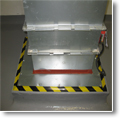

 风管及大型管道封堵
- 楼板或墙组 - 最小厚度2-1/2英寸之轻质或一般级水泥(100~150磅/立方尺)。墙壁由任何一种UL分类之水泥块组成。最大开孔面积720平方英寸及最长单边长度40英寸。请参考”防火材料指南”之”水泥块(CAZT)”分类篇查阅制造厂商之名字。
- 穿透物 - 最大两支钢铁风管长宽各12寸乘14寸(或更小)以24 号gauge(或更厚)同轴或不同轴均可安装。周缘空间可为0寸(点接触)到5寸，两支风管至少相距4寸。风管经由墙或楼板双面固定之。
- 防火系统- 防火系统须由下列各项组成:
A. 填充材料 �C 膨胀型片板- 铝箔面附镀锌钢板，依风管边缘轮廓裁切空
隙至多1/4寸。板材与楼板或墙之接面至少达2寸，且必须安装于楼板之顶部或墙之双面。镀锌钢板面朝外（铝箔面朝楼板或墙内侧）并以至少3/16寸直径1-1/4长之锚栓钉或同级品加锁至少1-1/4寸钢螺圈。锚栓间之间距应小于6寸。为安装方便起见，与四周风管接缝固定处应另加锚栓。
B. 固定钩�C 至少16号gauge之镀锌角铁附着在风管与防火板接合至少2寸，固定于楼板之顶部或墙之双面。并以至少1/4寸长10号(或更大)gauge与风管缘距最大不得超过1寸，而锚栓间之间距应小于6寸。安装前并以1/4寸径之防火泥(项目3E)填封楼板之顶部或墙之双面与板间之缝隙。
C. 角铁- 安装于楼板之顶部或墙之双面与风管中间，最小1-5/8乘1-5/8寸大小。厚度至少0.093寸(12号gauge)烤漆或镀锌不锈钢材采锚接或焊接于开口或墙内侧。与防火板间以1-1/4寸螺栓附螺圈相接，当角铁位于防火板下方时，螺钉间距不大于3寸；若角铁远离防火板接缝时，螺钉间距不大于6寸。安装前应以1/4寸径之防火泥(项目3E)填封楼板之顶部或墙之双面与板间之缝隙。
D. 遮蔽钢片－至少2寸宽0.019寸厚(26 ga)之镀锌钢片需使用于防火片板接缝处，并需置于接缝中央部位，安装前并需以1/4寸厚之防火泥（项目3E）压实于防火板处，螺丝锁上之间距需小于3寸宽。
E. 防火填充物质－防火泥 - (未显示) 片板与墙或楼板接壤处涂以至少1/4寸宽之连续防火泥。填封于所有风管与防火板接缝中。防火片板轮廓边缘均需涂布，并涂布于楼板之顶部或墙之双面与板间之缝隙。 |